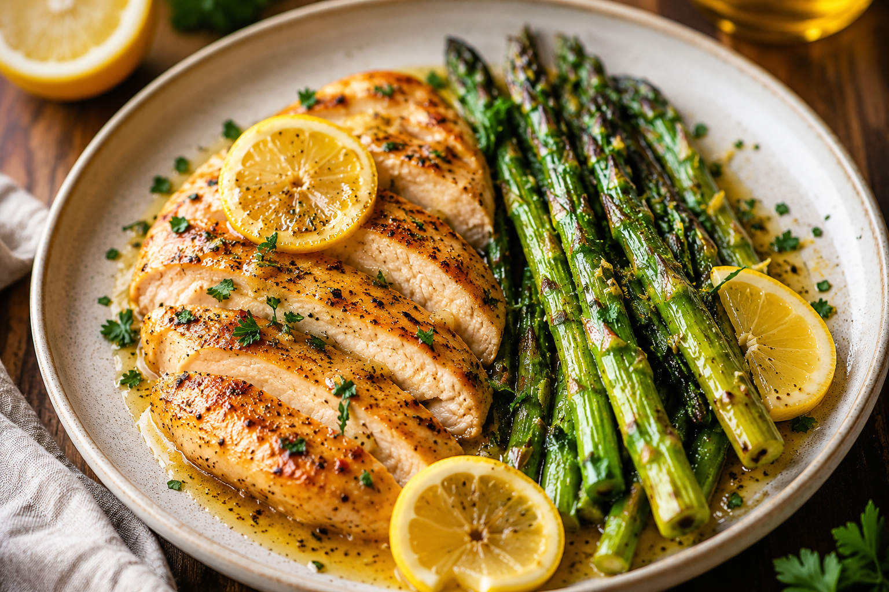

Home
Lemon Chicken and Asparagus

Description
Tender chicken breast glazed in a bright lemon sauce, paired with fresh roasted asparagus and seasoned with herbs and garlic. A light, flavorful dish with the perfect balance of citrus and savory notes.
Ingredients
- 4 boneless, skinless chicken breasts
- 4 teaspoons salt
- 4 teaspoons freshly ground black pepper
- 1 tablespoon olive oil
- 1 pound asparagus, ends trimmed and cut into 2-inch segments
- 1 lemon
- 3/4 cup freshly grated Parmesan cheese
- 2 cloves garlic, minced
- 2 teaspoon Italian seasoning
Steps
- Place one chicken breast on a cutting board. Cover chicken breast with plastic wrap and pound with a meat mallet until 3/4-inch thick. Repeat with remaining chicken breasts.
- Season chicken with 1/2 teaspoon salt and 1/2 teaspoon pepper.
- Heat 1 tablespoon olive oil in a very-large skillet over medium-high heat. Add chicken and cook until golden brown and an instant-read thermometer inserted into the center of a breast reads at least 165 degrees F (74 degrees C), 8 to 10 minutes, turning halfway. Remove chicken from the skillet; set aside.
- Add asparagus to the skillet. Cook over medium-high, until bright green and crisp tender, stirring occasionally, 2 to 3 minutes. Remove asparagus from the skillet; set aside.
- Juice half of the lemon (about 1 1/2 tablespoon juice) and slice the remaining half in wedges.
- Add lemon juice, whipping cream, Parmesan cheese, garlic, and Italian seasoning to the skillet
- Simmer over medium-high, scraping the bottom of the skillet with a wooden spoon to release any browned bits, 2 minutes. Season with remaining 1/4 teaspoon salt and 1/4 teaspoon pepper.
- Add chicken and asparagus back into the skillet. Simmer until heated through and sauce reaches desired consistency, about 1 minute. Serve with lemon wedges.